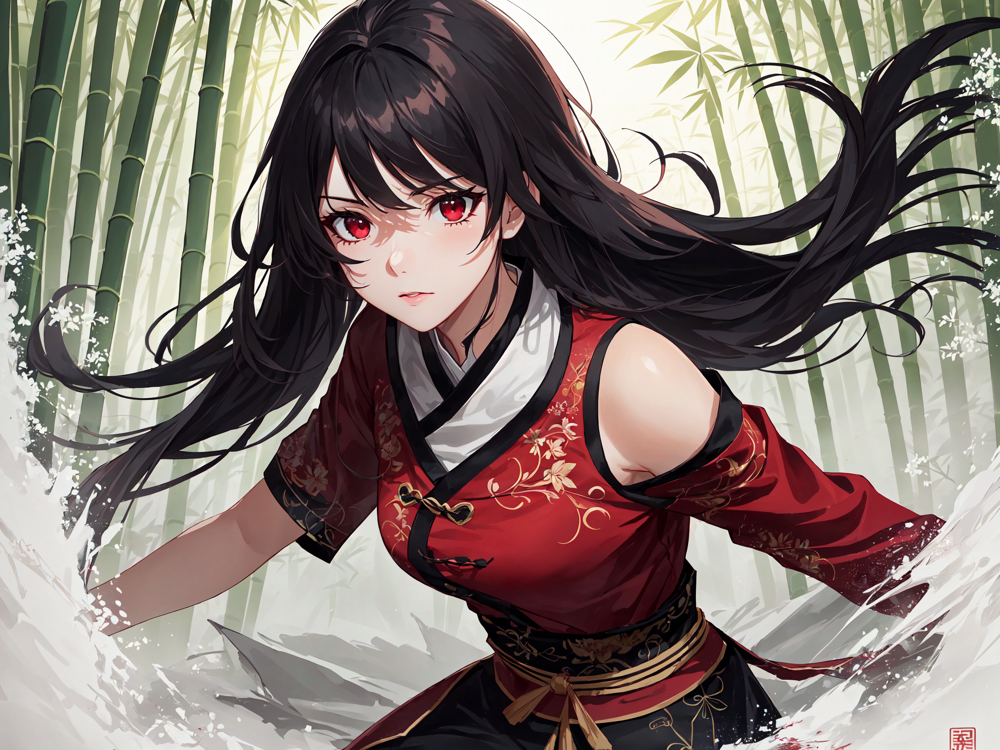

Anime Creations es un estudio de ilustración digital con sede en Quito, Ecuador. Nuestra pasión es crear ilustraciones únicas y memorables inspiradas en el mundo del anime. Con nuestra dedicación al arte digital, damos vida a personajes y escenas que perduran en la memoria.

El sueño de Anime Creations comenzó con dos apasionados del anime: María González y Alejandro López. Ambos compartían una profunda pasión por la creación de personajes y la representación artística de este mundo único.
María González, desde muy joven, descubrió su amor por el anime mientras creaba fanarts de sus personajes favoritos. Cada ilustración que realizaba tenía una historia que ella deseaba compartir con el mundo. Con el tiempo, su talento y dedicación la llevaron a especializarse en ilustración digital de personajes anime, convirtiéndose en una talentosa ilustradora.
Alejandro López se formó en artes digitales, desarrollando una profunda comprensión de la estética y la creatividad en el mundo del anime. Su enfoque artístico lo llevó a explorar la ilustración digital desde una perspectiva más creativa y única, buscando siempre capturar la esencia de los personajes y escenas.
Fue en una convención de anime en Quito donde María y Alejandro se conocieron y descubrieron que compartían la misma visión de la ilustración digital de anime. Juntos, decidieron unir sus talentos y fundaron Anime Creations, con el objetivo de crear un estudio de ilustración que no solo creara personajes, sino que también contara historias, evocara emociones y dejara recuerdos imborrables.
Ilustradora digital y editora de imágenes.
Con más de 5 años de experiencia en el campo de la ilustración digital.
Encargado de la logística y coordinación de proyectos.
Cuenta con experiencia en la gestión de proyectos artísticos de anime.
Especialista en marketing y redes sociales.
Amplia experiencia en estrategias de marketing digital para promover nuestras creaciones.
Ser el estudio de ilustración digital más reconocido y confiable en Quito, capturando la esencia única de personajes y escenas de anime para crear recuerdos artísticos duraderos.
Ofrecer ilustraciones digitales excepcionales que superen las expectativas de nuestros clientes y les permitan conectar emocionalmente con sus personajes y momentos favoritos del anime.